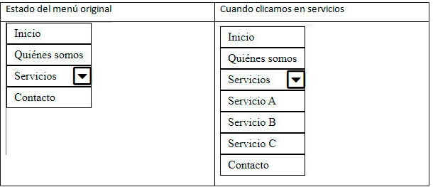

Enunciado
Dado el siguiente código CSS:
- Cree la estructura de un menú desplegable con HTML y la funcionalidad con JavaScript. Ambos códigos tendrán que estar en sus respectivos archivos y ser enlazados al principal.
- Además, cuando se clique la opción del menú deberán desplegarse las subopciones y cuando vuelva a clicar, el menú volverá a su estado inicial.
Código CSS:
* {
box-sizing: border-box;
margin: 0;
padding: 0;
}
li {
list-style-type: none;
position: relative;
width: 120px;
}
li a {
text-decoration: none;
display: inline-block;
padding: 5px 10px;
width: 120px;
height: 30px;
border: 1px solid #000;
color: #000;
}
.more {
display: inline-block;
position: absolute;
right: 0px;
font-size: 30px;
}El menú debe quedar como en la siguiente imagen:
NOTA: Debe utilizar la siguiente librería en HTML:
<link rel="stylesheet" href="https://use.fontawesome.com/releases/v5.6.1/css/all.css" integrity="sha384-gfdkjb5BdAXd+lj+gudLWI+BXq4IuLW5IT+brZEZsLFm++aCMlF1V92rMkPaX4PP" crossorigin="anonymous">Actividad asociada al CE1.2
Clasificar los distintos tipos de archivos que se van a integrar en la página, verificando la instalación del «plug-in» correspondiente en el navegador web.
Solución
Actividad asociada al CE1.2
En la página que estamos construyendo, los distintos tipos de archivos que se van a integrar son:
- Archivos HTML: Representados por el archivo "CPT2.html". Estos archivos contienen el código estructural y de contenido de la página web.
- Archivos CSS: Representados por el archivo 'styleCPT2.css'. Estos archivos contienen reglas de estilo que se aplican a los elementos HTML para definir su apariencia.
- Archivos JavaScript: Representados por el archivo 'scriptCPT2.js'. Estos archivos contienen código que agrega interactividad y funcionalidad a la página web. En este caso, se utiliza para controlar el desplegable del menú.
- Archivos de fuente: En este caso, se utiliza la biblioteca de fuentes Font Awesome. El archivo CSS de Font Awesome se enlaza mediante la etiqueta <link> en el archivo HTML. Hay que asegurarse de que se haya instalado correctamente el plugin correspondiente en el navegador web para que los iconos de Font Awesome se muestren correctamente.
En resumen, los tipos de archivos que se integran en la página son HTML, CSS, JavaScript y archivos de fuentes externas. Es importante verificar que los plugins y bibliotecas correspondientes estén instalados y enlazados correctamente para que la página funcione adecuadamente.